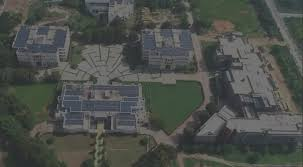

Food • Rules • Attendance • Student Life
This mini-project presents a realistic view of engineering college life — from daily canteen meals to strict attendance policies and essential student resources. It is designed as a clean, structured front-end foundation suitable for a MERN project.
